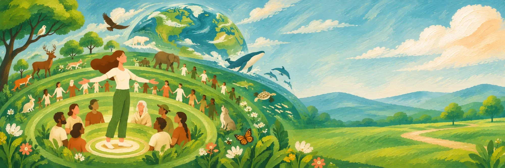

Эволюция сознания —
недостающее звеноустойчивости
О климатическом кризисе мы знаем больше полувека. Технологии для его решения во многом уже есть. И всё же выбросы почти всё это время росли. Похоже, дело не только в знаниях и технике, но и в том, как мы видим мир, себя и друг друга. Разбираемся, что стоит за модными словами «эволюция сознания», что из этого подтверждает наука и почему внутренние перемены — не замена внешним, а их необходимая половина.
Умнеем быстрее, чем взрослеем
В 1979 году группа американских учёных под руководством Джула Чарни оценила, насколько потеплеет Земля при удвоении углекислого газа в воздухе. Их цифра — около трёх градусов — почти совпадает с сегодняшними оценками. К тому времени Чарльз Килинг уже двадцать лет измерял, как растёт концентрация CO₂. Иначе говоря, главное о климатическом кризисе человечество знает почти полвека.
Решения тоже давно не секрет. Солнечные панели подешевели в десятки раз, ветровые станции и электромобили стали обычной техникой, архитекторы умеют строить дома почти без отопления, а агрономы — восстанавливать почву. И всё же мировые выбросы CO₂ с тех пор выросли примерно в полтора раза.
Если знания есть и технологии есть, а перемены идут медленно, значит, узкое место где-то ещё. Многие исследователи и мыслители — от антрополога Грегори Бейтсона до организаторов глобальных программ устойчивого развития — приходят к одному выводу: дело в том, как люди видят мир. Наши способности создавать мощные инструменты растут быстрее, чем способность пользоваться ими мудро. Мы умнеем быстрее, чем взрослеем.
Для этого «взросления» в последние годы всё чаще используют слова «эволюция сознания». Звучит возвышенно и немного туманно. Попробуем разобраться спокойно.
Что такое «эволюция сознания»
Сразу честно: это не научный термин. Под ним собирают очень разные вещи — от духовных учений до бизнес-тренингов. Но у этой темы есть и вполне исследованное ядро: психология развития взрослых.
Долгое время считалось, что психологически человек «дорастает» к двадцати годам, а дальше только накапливает опыт. Исследования второй половины XX века показали другое. Психолог Джейн Лёвинджер, а за ней Роберт Киган из Гарварда обнаружили, что и взрослые люди проходят качественные ступени развития. Меняется не объём знаний, а то, как человек думает: что он способен увидеть со стороны, а что остаётся для него невидимым, как воздух.
Киган сформулировал мысль, которая очень близка к теме этого сайта: современный мир предъявляет к людям требования, для которых нужна ступень развития выше той, на которой находится большинство взрослых. Отсюда название его книги — «Нам с головой не хватает». Климатический кризис — именно такая задача: она требует думать о системах, о далёком будущем, о людях, которых мы никогда не увидим, и держать в голове противоречия, у которых нет простого решения.
Важно понимать, чем эти ступени не являются. Это не ранги, по которым одни люди «лучше» других, и не уровень интеллекта. Очень умный человек может мыслить вполне «социализированно», а человек без образования — видеть мир широко. Именно поэтому высокий интеллект сам по себе не защищает ни от жестокости, ни от коллективного безумия: история XX века знает немало блестяще образованных людей, служивших чудовищным режимам.
Расширение круга заботы
Есть и другой способ говорить о росте сознания — через вопрос «о ком я забочусь?». Философ Питер Сингер назвал это расширяющимся кругом. На протяжении истории круг тех, чьи интересы люди признают важными, понемногу рос: от рода к племени, от племени к народу, от народа к человечеству. Рабство, когда-то казавшееся нормой, стало немыслимым. Права, когда-то принадлежавшие немногим, распространились на всех.
Экологическое мышление предлагает сделать следующий шаг. Американский лесник Олдо Леопольд в середине XX века сформулировал «этику земли»: человек — не завоеватель, а член сообщества, в которое входят почвы, воды, растения и животные. Норвежский философ Арне Нэсс говорил об «экологическом я»: чем шире человек ощущает себя, тем естественнее он заботится о мире — не из долга, а так же, как заботится о себе.
Устойчивое развитие по своему классическому определению — это развитие, которое удовлетворяет потребности нынешнего поколения, не лишая будущие поколения возможности удовлетворять свои. В этой формуле уже заложено требование к сознанию: учитывать интересы тех, кто ещё не родился и не может проголосовать, заплатить или пожаловаться. Ни рынок, ни выборы сами по себе этого не умеют. Это умеет только человек с достаточно широким кругом заботы.
Знаю, но не делаю
Психологи давно описали разрыв между убеждениями и поступками. Человек может искренне тревожиться о климате и при этом ничего не менять. Это не лицемерие, а особенности того, как устроено наше восприятие.
- Слишком большое, чтобы увидеть. Климат — то, что философ Тимоти Мортон называет гиперобъектом: явление настолько растянуто во времени и пространстве, что его нельзя увидеть целиком. Мы видим жаркое лето, но не видим потепления.
- Слишком далёкое. Психологи говорят о психологической дистанции: последствия кажутся отодвинутыми во времени, в другие страны, к другим людям. А мозг гораздо охотнее реагирует на то, что близко и сейчас.
- Сдвиг базовой линии. Каждое поколение принимает за норму то состояние природы, которое застало в детстве. Исчезновение рыбы, птиц, снега происходит медленнее, чем меняется наша «нормальность».
- Размытая ответственность. Когда виноваты все, кажется, что не виноват никто, а мой вклад слишком мал, чтобы что-то значить.
- Защита своей идентичности. Если признание проблемы угрожает образу жизни или взглядам «своих», человек скорее отвергнет факты, чем рискнёт отношениями. Это особенно сильно на «социализированной» ступени.
Обратите внимание: почти ни одна из этих «утечек» не лечится дополнительной информацией. Человеку, который уже знает о проблеме, ещё один график не поможет. Помочь может другое: почувствовать связь, увидеть свою роль, найти «своих», для которых бережное отношение к миру — норма. Это и есть территория сознания.
Что действительно доказано
Вокруг темы много красивых обещаний. Отделим проверенное от предположений.
Самый надёжный вывод неожиданно прост: люди, которые чувствуют себя частью природы, бережнее к ней относятся. Причём это чувство не врождённое — оно растёт от опыта. Ребёнок, который лазил по деревьям, сажал огород и видел, как из жёлудя появляется дуб, чаще вырастает взрослым, которому не всё равно. Второй надёжный вывод: ценности, выходящие за пределы собственной выгоды, — забота о других, о справедливости, о природе — стабильно связаны с готовностью поддерживать перемены.
Иначе говоря, то, что называют эволюцией сознания, для целей устойчивости можно сформулировать вполне приземлённо: расширение круга заботы плюс способность видеть системы и держать долгий горизонт. И то, и другое можно развивать.
Цели внутреннего развития
В 2015 году все страны ООН приняли семнадцать Целей устойчивого развития: от ликвидации голода до сохранения лесов и океанов. К середине пути стало ясно, что большинство из них не выполняется. В 2020 году в Швеции появилась инициатива, которая предложила неожиданное объяснение: у нас есть список того, что нужно сделать, но нет списка внутренних качеств, которые нужны людям, чтобы это сделать.
Так появились Цели внутреннего развития (Inner Development Goals). Их составили, опросив тысячи специалистов, учёных и практиков по всему миру. Получилась рамка из пяти измерений и двух десятков навыков.
Обратите внимание на третье измерение: ощущение связи с природой и со всем живым прямо названо одним из навыков, необходимых для устойчивого развития. Это редкий случай, когда разговор о сознании переведён на язык, понятный и школе, и компании, и государственному служащему. Рамку уже используют университеты, муниципалитеты и организации в десятках стран.
Как растёт сознание
Развитие взрослых не происходит от чтения правильных книг. Исследователи сходятся на том, что оно случается, когда человек сталкивается с задачей, которая чуть больше его нынешних возможностей, — и при этом получает поддержку. Вызов плюс опора. Отсюда несколько практических выводов.
- Время в природе. Не как отдых от жизни, а как её часть: лес, сад, река, наблюдение за сменой сезонов. Посадить дерево и годами смотреть, как оно растёт, — простое упражнение в длинном горизонте.
- Дела руками. Огород, починка вещей, компост, строительство. Когда видишь, откуда берётся еда и куда уходят отходы, круговороты перестают быть абстракцией.
- Встреча с другим. Общение с людьми иных взглядов, культур, поколений. Именно разногласия, прожитые без вражды, растягивают картину мира.
- Сообщество, где забота — норма. Люди меняются вслед за «своими». Поэтому среда, в которой бережное отношение к миру считается нормальным, действует сильнее любой агитации.
- Рефлексия. Привычка спрашивать себя: что я принимаю как само собой разумеющееся? Чего я не вижу? Как это выглядит с точки зрения тех, кто придёт после нас?
- Ответственность за реальное дело. Отвечать за общий сад, двор, проект — значит учиться держать интересы многих людей и долгий срок одновременно.
Самое интересное здесь в том, что почти всё это — одновременно и практики устойчивой жизни, и практики роста. Человек, который сажает деревья, чинит вещи и участвует в жизни своего сообщества, не только уменьшает свой след, но и расширяет свой круг заботы. Внешнее и внутреннее здесь не разделены.
Исторически скачки в мышлении случались не в одиночку, а в особых средах: во Флоренции эпохи Возрождения, в научных обществах эпохи Просвещения, в творческих кругах и общинах. Возможно, одна из главных задач нашего времени — сознательно создавать такие среды, где люди помогают друг другу взрослеть: школы, общины, сети мест, о которых мы писали в эссе о сетевых государствах.
Честный взгляд
Сознание нельзя толком измерить. Модели взрослого развития изучаются десятилетиями, но их оценка трудоёмка и не лишена субъективности. Встречающиеся в разговорах цифры вроде «осознанность растёт на столько-то процентов за поколение» не имеют научной основы. К любым утверждениям о «средних уровнях сознания» человечества стоит относиться с большой осторожностью.
Опасность лестницы. Как только появляются «уровни», появляется соблазн считать себя выше других. Отсюда один шаг до высокомерия: «они просто не доросли». Это разрушает именно то, ради чего всё затевалось, — способность понимать людей с другими взглядами. Ступени развития полезны как карта для собственного роста, но плохи как ярлык для других.
Ловушка «начни с себя». Корпорациям и правительствам бывает удобно переложить ответственность на личный выбор. Знаменитый «углеродный след человека» популяризировала в 2000-х годах реклама нефтяной компании. Внутренняя работа не должна становиться оправданием того, что заводы, электростанции и законы остаются прежними. Самый «осознанный» человек всё равно ездит по дорогам, которые построило общество, и пользуется электричеством, которое ему дают.
«Духовный обход». Психологи называют так привычку использовать духовные практики, чтобы не замечать реальных проблем и неприятных чувств. Медитация вместо участия, «принятие» вместо действия. Зрелое сознание, наоборот, позволяет смотреть на трудное прямо.
Риск манипуляций. Обещания «пробуждения» и «нового уровня сознания» — излюбленный язык сект и сомнительных тренингов. Признак здоровой среды развития: она поощряет сомнения, критику и выход, а не требует их подавлять.
Времени мало. Перемены в сознании идут поколениями, а климату нужны решения в ближайшие десятилетия. Поэтому нельзя ждать, пока все «дорастут». Технологии, законы, цены на выбросы, инфраструктура должны меняться сейчас — а рост сознания нужен для того, чтобы эти перемены были приняты, поддержаны и не откатились назад.
Итог: две руки
Устойчивость часто представляют как инженерную задачу: заменить уголь солнцем, бензин — электричеством, пластик — чем-то разлагаемым. Всё это необходимо. Но опыт последних пятидесяти лет показывает: знаний и технологий недостаточно, если люди не видят себя частью целого, не чувствуют связи с теми, кто будет жить после них, и сплачиваются только против врага.
Эволюция сознания в приземлённом смысле — это расширение круга заботы, умение видеть системы и думать поколениями. Она не происходит сама собой с возрастом и не заменяет внешних перемен. Это вторая рука, без которой первой трудно что-то удержать: одна строит новые электростанции и пишет законы, другая делает так, чтобы люди хотели жить в мире, который эти перемены создают.
И начинается она с очень простых вещей. С прогулки в лесу. С дерева, посаженного для внуков. С разговора с человеком, который думает иначе. С вопроса, который стоит задавать себе почаще: о ком ещё мне стоит позаботиться?
Читайте также: Школа под открытым небом · Лесной активизм: вырастить лес своими руками · ESG и устойчивое развитие: прибор или вывеска? · Сетевые государства: объединить людей не страхом · Дерево из воздуха · Бейтсон против ChatGPT · Гиперобъект · Сдвиг базовой линии · Экологический кризис — это кризис образования · Что происходит с нами, когда исчезает мир
- National Research Council (1979). Carbon Dioxide and Climate: A Scientific Assessment («доклад Чарни»).
- Kegan R. In Over Our Heads: The Mental Demands of Modern Life (1994); Kegan R., Lahey L. Immunity to Change (2009).
- Loevinger J. Ego Development (1976).
- Singer P. The Expanding Circle (1981).
- Leopold A. A Sand County Almanac (1949) — «Этика земли».
- Næss A. (1987). Self-Realization: An Ecological Approach to Being in the World.
- Bateson G. Steps to an Ecology of Mind (1972).
- Morton T. Hyperobjects (2013); Pauly D. (1995) Anecdotes and the shifting baseline syndrome of fisheries.
- Whitburn J., Linklater W., Abrahamse W. (2020). Meta-analysis of human connection to nature and proenvironmental behavior. Conservation Biology 34, 180–193.
- Schwartz S. H. (1992). Universals in the content and structure of values; обзоры связи ценностей самотрансценденции с экологическим поведением.
- Piff P. et al. (2015). Awe, the small self, and prosocial behavior. Journal of Personality and Social Psychology 108, 883–899.
- Geiger S. M. et al. (2019). Mindfulness and sustainability: correlation or causation? Current Opinion in Psychology 28.
- Inner Development Goals: Background, method and the IDG framework (2021) — материалы инициативы.
- United Nations (2015). Transforming our world: the 2030 Agenda for Sustainable Development; WCED (1987). Our Common Future.
- Welwood J. (1984) — понятие «духовного обхода»; Supran G., Oreskes N. (2021). Rhetoric and frame analysis of ExxonMobil's climate change communications. One Earth 4 — о происхождении риторики «личного углеродного следа».